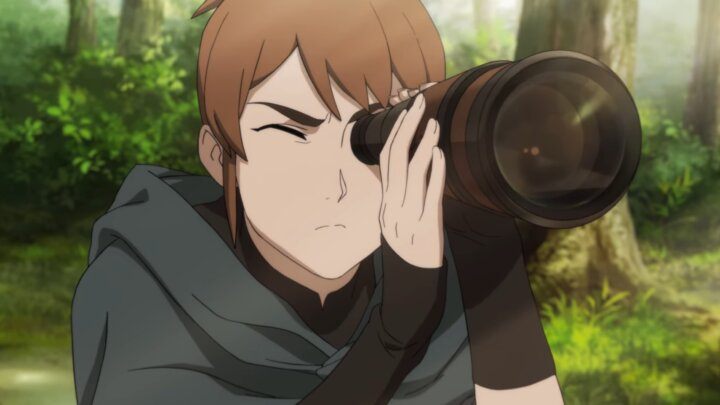
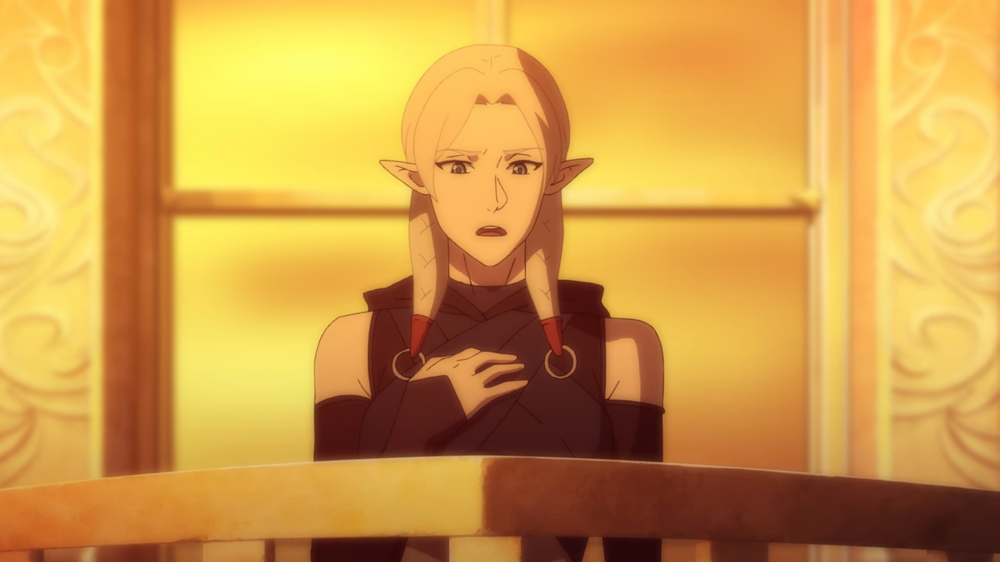
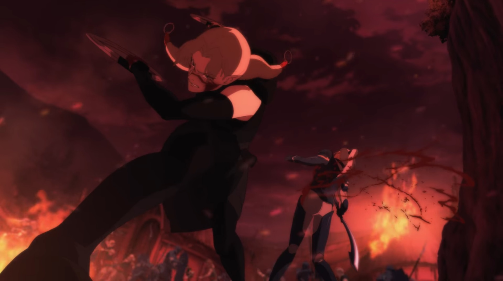

Which Characters from Dota Dragon’s Blood could become new Heroes?
Now that the dust has settled over the series, let's take a closer look at the introduced characters and see which ones could make it over to the game that inspired the animation.
It is back to one of the Dota 2 community’s favourite pastimes: Guessing the newest hero for Dota 2. After we have had our fill with top tier Dota at the Major and lorebombs left and right in Dragon’s Blood, we are all waiting with bated breath for Patch 7.29.
Highlight of the upcoming update is without a doubt the new hero. Let’s take a look at characters from the series that could make the jump over to the game.
The Fan Favourite – Marci
Marci should not surprise you as right on top of the list. Mirana’s mute sidekick has quietly established herself as the absolute fan favourite of the community. Throughout the series she has been showcasing some serious martial arts skills along with lots of expressions that have endeared her to the fans. While she did not have clear cut abilities showcased in the animation, her fighting style can fill a niche that is still open in Dota 2’s hero roster.
Judging from the amount of fanart around Marci, Valve can basically do no wrong as long as they include her in some capacity in Dota 2. And if you are worried about a lack of voicelines, her whistling skills are just on the same level as Phoenix’ squawks or Io’s beeps, so we got that covered. Then again, I might just be a bit biased.
Let me just showcase an entire skillset really fast” – Fymryn
True to form as one of the series’ protagonists, Fymryn is also one of the top candidates for making it into Dota 2. Her likelihood of making it seems quite high on first glance actually as she has shown several abilities in the animation that could be easily translated into actual skills in the game. Illusions, shapeshifting, some form of invisibility and a rapid chain of attacks are nothing new for Dota 2 players.
Then again the familiarity of her skills could also point towards her not making it over to Dota 2 as there are already plenty of heroes that have these abilities in some fashion. However her connection to the former Moon Goddess Mene could also be used to craft a more original skillset for her.